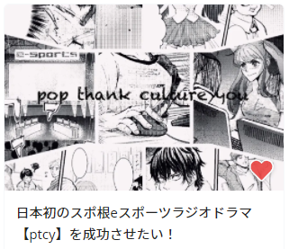

Crowd funding
2021年1月20日までcampfireにて製作費を集めるため
クラウドファンディングを実施しています。
ここでしか手に入らないリターンばかりです。
残りあと少しです！
ご支援よろしくお願いします！


横の画像をクリック！
3vs3 の e-sports ゲーム"pop thank culture you"。通称 ptcy。
30 代のプレイヤー、ヒロとトシはプロゲーマーになることを目標に長年同じチームでやってきたが、彼らに突出した才能は無くなかなか勝ち進めない。
リーダーのヒロは、その才能の無さをカバーするように、自らの身体を壊してまでも毎日練習に時間を費やす。
このまま何者にもなれないまま終わってしまうことに怯えるヒロ。
すでにゲームをすることに楽しさなどほとんど感じないが、歯を食いしばり練習を続ける......。
ヒロ(32)e-sportsプレイヤー。
チームメガロマニアのリーダー。ptcyでプロゲーマーになることを目指している。
非凡な才能はないが、勝つことへの執念はすさまじく、勝つためには身体の限界を超えてでも努力し続ける。気難しく頑固。他人に厳しく自分にも厳しい。
トシ(34)e-sportsプレイヤー。
チームメガロマニアのメンバー。ヒロの相棒。
基本的に温厚で、ヒロの代わりに周囲の人と協調していくタイプ。同棲している彼女がいる。夢と生活の優先順位について迷っている。
ヒメ(23)アイドル。
"pop thank girls"というユニットでptcyの主題歌を歌っている。また同名でptcyのプレイヤーもやっている。
外面はいいが、実際は気が強く攻撃的。後にメガロマニアに加入。根は不器用な努力家。
2021年1月20日までcampfireにて製作費を集めるため
クラウドファンディングを実施しています。
ここでしか手に入らないリターンばかりです。
横の画像をクリック！